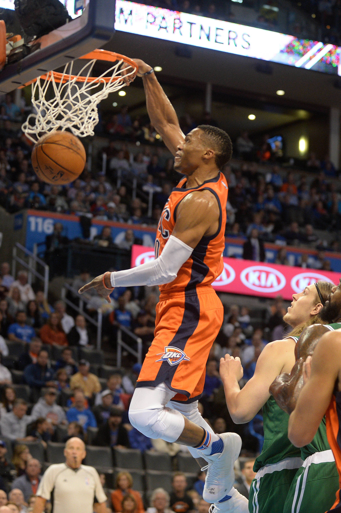
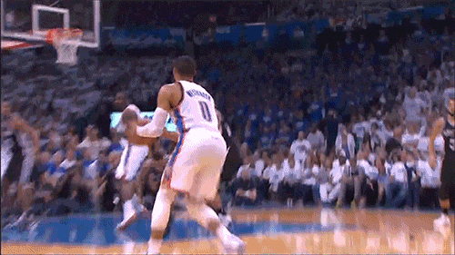
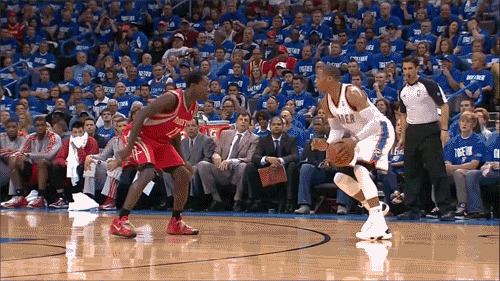

Russell Westbrook is the best point gaurd today and her is why.
Russell Westbrook is a 29 year old professional Basketball player that plays the Oklahoma City Thunder. He is one of the most athletic point guards in professional Basketball, he is 6 ft 3 in and weighs 200 lbs. Westbrook grew up in Hawthorne and wanted to go to college at USLA. He managed to get in and have the opportunity to start his basketball carrer there. He was drafted to the NBA in 2008 and played for the Seattle Supersonics later known as Oklahoma City Thunder.
  